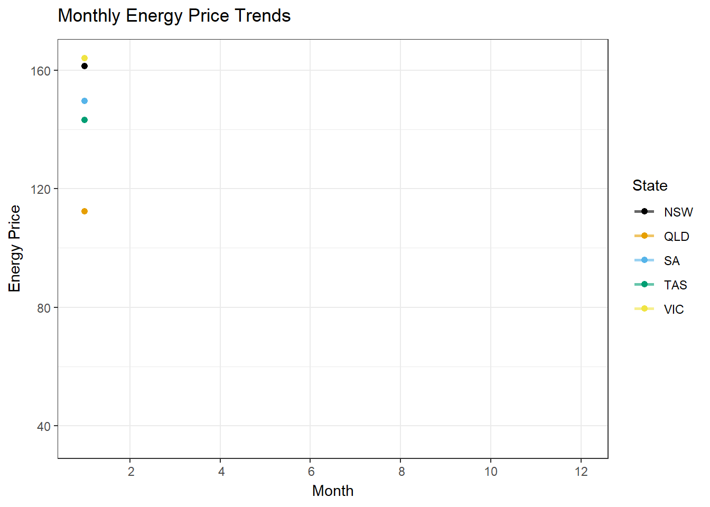

Research on the dynamics of the Australian energy market
Regional, Temporal, and Demand Dynamics Shaping the Market
Australian energy markets exhibit fascinating and complex patterns influenced by time, region, demand and import/export trade. Analysis of these dynamics, based on data from 2018 to 2019, to uncover the patterns can provide important insights for policymakers, businesses and consumers to optimize energy use and manage costs.
Implications of this research in the long term:
The intricacies of price, region, demand and imports/exports in Australia’s energy markets Identifying these trends can give stakeholders a powerful aid to policy and business strategy.
For example, energy storage and distribution can be optimized to meet different demand patterns. Consider regional differences and develop targeted pricing models. Invest in infrastructure and renewable resources to stabilize prices and improve sustainability.
This analysis paves the way for a resilient and efficient energy future, balancing economic, environmental and social needs across Australia.
Translated with DeepL.com (free version)
Citation
Wickham, H., Averick, M., Bryan, J., Chang, W., D’Agostino McGowan, L., François, R., … & Woo, K. (2019). tidyverse: Easily install and load ‘tidyverse’ packages. Journal of Open Source Software, 4(43), 1686. https://doi.org/10.21105/joss.01686
Wickham, H. (2016). ggplot2: Elegant graphics for data analysis. Springer-Verlag New York. https://doi.org/10.1007/978-3-319-24277-4
Müller, K. (2020). here: A simpler way to find your files. (R package version 1.0.1). https://CRAN.R-project.org/package=here
Wickham, H., François, R., Henry, L., Müller, K., & Vaughan, D. (2023). dplyr: A grammar of data manipulation. (R package version 1.1.4). https://CRAN.R-project.org/package=dplyr
Arnold, J. B. (2024). ggthemes: Extra themes, scales and geoms for ‘ggplot2’. (R package version 5.1.0). https://CRAN.R-project.org/package=ggthemes
Pedersen T, Robinson D (2024). _gganimate: A Grammar of Animated Graphics_. (R package version 1.0.9). https://CRAN.R-project.org/package=gganimate
Ooms J, Kornel Lesiński, Authors of the dependency Rust crates (2024). _gifski: Highest Quality GIF Encoder_. (R package version 1.32.0-1). https://CRAN.R-project.org/package=gifski
Urbanek S (2022). _png: Read and write PNG images_. (R package version 0.1-8). https://CRAN.R-project.org/package=png
Data: energydata.csv